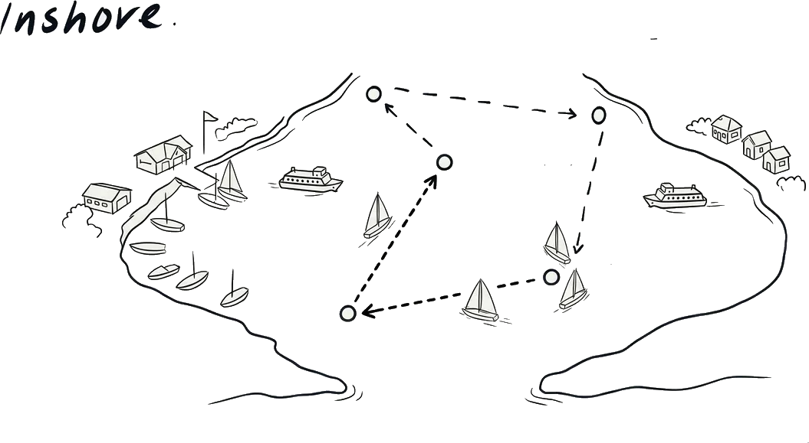
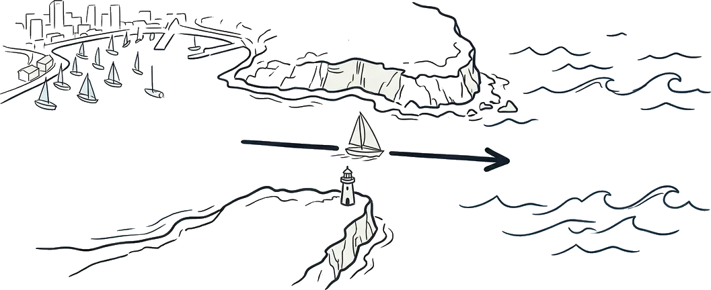

People often ask me what the difference is between inshore and offshore sailing. On the surface it sounds obvious: one is close to land, the other isn't. But the reality is much more layered than that. The distance from shore changes almost everything about how you prepare, how you sail, and how you think.
They're both brilliant in their own way, but they ask very different things of you.
1. What counts as "inshore" and "offshore"?
There's no universal line on a chart where inshore ends and offshore begins, but the general idea is straightforward.
Inshore racing happens in protected or semi-protected waters. Harbour races, reservoirs/lakes sailing, short coastal sprints. Races might last anywhere from 45 minutes to a few hours. You can see the start line, the marks, and usually the finish line from the same spot.

Offshore racing takes you out of sight of land. You're heading from one port to another, often overnight or over multiple days. The Sydney to Gold Coast, for example, is 384 nautical miles. You're out on the open ocean, sometimes 30 or 40 miles from the nearest coast, and the race takes two to three days.

There are also coastal races that sit somewhere in between, staying within a few miles of the coastline but covering longer distances. These are sometimes called "passage races" and they share characteristics of both.
2. Preparation
This is where the two start to feel like different sports entirely.
For an inshore race, preparation is about performance. You check the weather forecast, plan your sail selection, tune your rig, tension your battens. You pack a snack and some water. You can forget something and it's annoying, not dangerous.
For an offshore race, preparation is about survival as much as speed. The safety gear list alone runs to several pages. You need life rafts, EPIRBs (emergency position-indicating radio beacons), flares, grab bags, jacklines, tethers, storm sails, and redundant communications. Every boat undergoes a formal safety inspection before the race. And for racing, everything needs to be checked: the structural integrity of the hull, the engine, the electrics, and the medical kit.
3. Crew and watch systems
Inshore races typically have full crews. On a boat like ours, a Dehler 30 OD, an inshore crew might be four or five people. Everyone has a specific role: helmsman, trimmer, bow, tactician. You're all racing, all working, all the time.
Offshore is different. Racing double-handed means just two people for the entire race. You can't both be awake for three days straight, so you rotate in a watch system. One person sleeps while the other sails.
Our typical watch rotation is four hours on, four hours off. The person on watch drives the boat, manages the sails, watches the instruments, keeps a lookout for other vessels, and monitors the weather. The person off watch sleeps, eats, and recovers.
This is one of the biggest mental shifts in offshore sailing. You're making decisions alone, at night, when you're tired. You have to trust your own judgement.
4. Navigation and strategy
Inshore navigation is largely visual. You can see the marks, you can see other boats, and you can see the wind on the water. Strategy is about reading shifts, positioning against other boats, and executing manoeuvres cleanly. Races are short enough that conditions rarely change dramatically.
Offshore, the strategic picture is far bigger. You're dealing with weather systems that evolve over hours and days. The East Australian Current runs down the coast and can add or subtract knots of boat speed depending on where you position. You're making routing decisions with incomplete information, weighing up whether to stay inshore and risk lighter winds or go wide to get more breeze,
Navigation goes from eyeball-and-compass to a full electronic suite: chartplotter, AIS (automatic identification system), weather GRIB files, Starlink, and weather apps.
5. The sea state
Inshore waters are generally protected. Harbours and bays might have chop, the occasional uncomfortable wave pattern near headlands, but you're rarely dealing with genuine ocean swell.
Offshore, the sea state becomes a major factor. Open ocean swells can run two to four metres on the east coast of Australia, and significantly more if a weather system moves through. The boat motion changes completely. You're heeling, pitching, and occasionally getting knocked around by waves. Everything below deck needs to be secured.
This affects everything: how you change sails, how you cook, how well you sleep, how quickly you fatigue. A rough night offshore is physically demanding in a way that inshore racing rarely is.
6. Safety and self-reliance
Inshore, if something goes wrong, help is close. You can retire from a race and motor home. A rescue boat is usually nearby. The worst-case scenario is generally a broken piece of gear or a retirement, not a life-threatening situation.
Offshore, you are your own rescue. If a halyard breaks at 2am, 40 miles from the coast, you fix it. If someone gets injured, you manage it with a first aid kit and a satellite phone call to shore-based medical advice. The nearest help might be hours away by helicopter or half a day by another vessel.
This changes the way you think about decisions. You reef earlier because a blown-out sail offshore is a much bigger problem than it is in the harbour. You double-check everything before racing because a failure offshore has consequences. You clip on with a tether every time you leave the cockpit, because falling overboard in the dark is the scenario nobody wants to consider.
So which is better?
Neither. They're complementary.
Inshore racing teaches you boat speed, boat handling, tactical awareness, and how to sail in close quarters. These are foundational skills. Pretty much every offshore sailor has an inshore background, because that's where you learn to sail fast and sail well.
Offshore racing teaches you seamanship, self-reliance, weather interpretation, and endurance. It forces you to plan properly, think ahead, and manage yourself as much as you manage the boat.
If you're starting out, start inshore. Learn to sail well in a controlled environment. Build your skills, build your confidence, and build your experience. When the time feels right, look for positions to crew on coastal passage races or shorter offshore races.